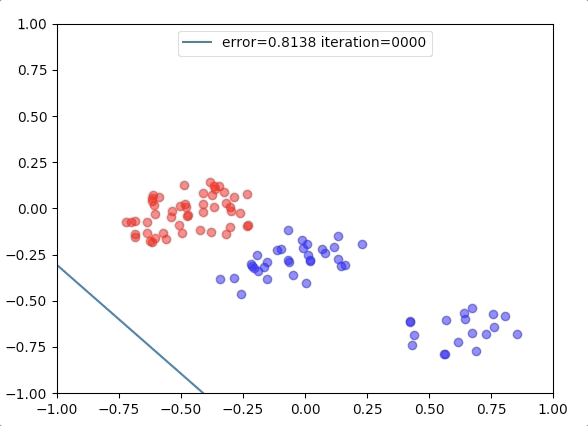
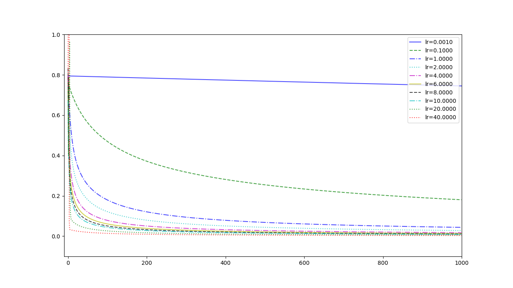
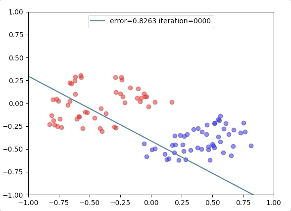
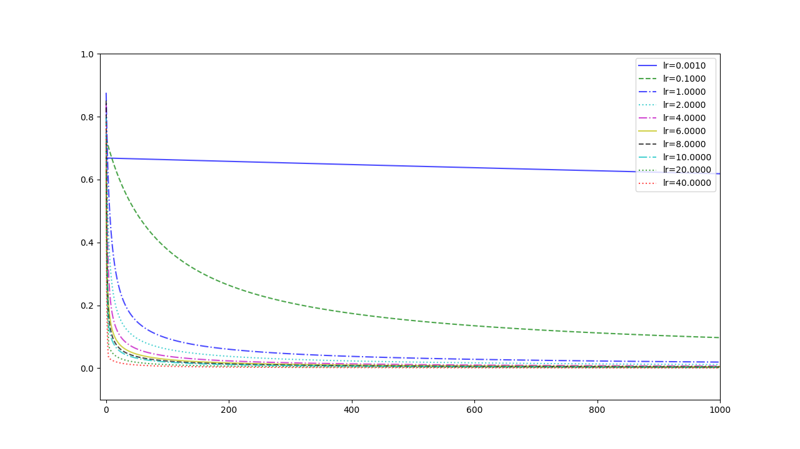
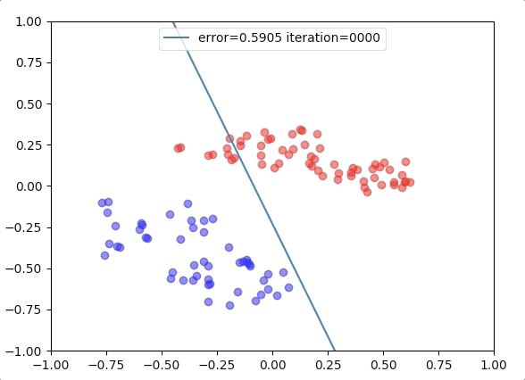
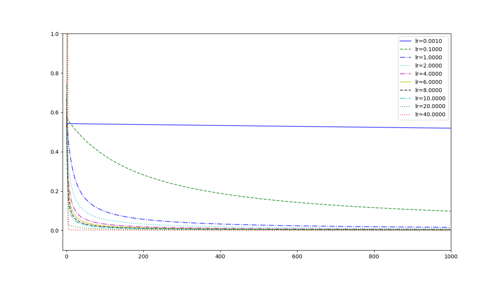
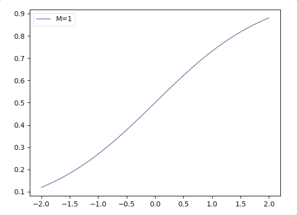

and when a=0, δ(a)=21 and this is just the half of the range of logistic function. This gives us a strong implication that we can set a equals to some functions y(x), and then
The easiest function is a constant which corresponds to a 1-deminsional input. However, the dicision boundary of 1-deminsional input is a degenerated line, namely, a point. So we consider a little complex function - a 2-deminsional input vector [x1x2]T and the function y(x) is:
Then we substitute this into equation (1), we got our linear logsitic regression function:
y(x)=δ(wTx)=1+e−wTx1(4)
The output of the function (4) is just 1-dimensional and its range is 0 to 1. So it can be used to represent a probability of the input belongs to C1 whose label is 1 or C0 whose label is 0 in the training set. In this form, we can just deal with a two-class mission because we have only one decision boundary.
Estimating the Parameters in Logistic Regression
Although logistic regression is called regression, it acts as a classifier. Our mission, now, is to estimate the parameters in equation(4).
Recalling that the output of equation(4) is P(C1∣x,M) where M is the model we selected. And the model sometimes can be represented by its parameters. And the mission should you chose to accept it, is to build probability P(w∣x,t) where x is the input vector and t∈{0,1} is the corresponding label and condition x is always been omitted. t is one of C1 or C2, so the Bayesian relation of P(w∣t) is:
Then the maximise likelihood function is employed to estimate the parameters. And the likelihood is just:
P(C1∣x,M)=δ(wTx)=1+e−wTx1(6)
when we have had the training set:
{x1,t1},{x2,t2},⋯,{xN,tN}(7)
The likelihood becomes:
Πti∈C11+e−wTxi1Πti∈C0(1−1+e−wTxi1)(8)
In the second part, when x belongs to C0 the label is 0. The output of this class should approach to 0, so minimising 1+e−wTxi1 equals to maximising 1−1+e−wTxi1. For equation(8) is not convenient to optimise, we can use the property that tn∈0,1 and we have:
Equation(10) is called cross-entropy, which is a very important concept in information theory and is called cross-entropy error in machine learning which is also a very useful function.
For there is no closed-form solution, ‘steepest descent algorithm’ is employed. And what we need to calculate firstly is the derivative of equation(10). For we want to get the derivative of w who is in the function yi(x), the chain rule is necessary:
deffit(self, x, y, e_threshold, lr=1): x = np.array(x)/320.-1 # augment the input x_dim = x.shape[0] x = np.c_[np.ones(x_dim), x] # initial parameters in 0.01 to 1 w = np.random.randint(1, 100, x.shape[1])/100. number_of_points = np.size(y) for dummy inrange(1000): y_output = self.logistic_sigmoid(w.dot(x.transpose())) # gradient calculation e_gradient = np.zeros(x.shape[1]) for i inrange(number_of_points): e_gradient += (y_output[i]-y[i])*x[i] e_gradient = e_gradient / number_of_points # update parameter w += -e_gradient*lr e = 0 for i inrange(number_of_points): e += -(y[i] * np.log(y_output[i]) + (1 - y[i]) * np.log(1 - y_output[i])) e /= number_of_points if e <= e_threshold: break return w
Two hyperparameters are the learning rate and the stop condition. When the error is lower than the stop value, the algorithm stops.
Experiment 1

with the learning rate 1, and different learning rates lead to different convergence rate:

Experiment 2

with the learning rate 1, and different learning rates lead to different convergence rate:

Experiment 3

with the learning rate 1, and different learning rates lead to different convergence rate:

Several Traps in Logistic Regression
Input value should be nomarlized and centered at 0
Learning rate is chosen corroding to equation (14) but not −∑i=1N(ti−yi)x because the uncertain coefficient N
parameter vector w identifies the direction, so its margin can be arbitrary large. and to a large w , yi(x) is very close to 1 or 0, but it can never be 1 or 0. So there is no optimization position, and the equation(13) can never be 0 which means the algorithm can never stop by himself
Considering 1+e−wTx1, when the margin of w grows, we can write it in a combination of margin M and direction vector wd: 1+e−M(wdTx)1. And the function 1+e−M(x)1 varies according M is like(when M grows the logistic function is more like Heaviside step function):

References
Bishop, Christopher M. Pattern recognition and machine learning. springer, 2006. ↩︎